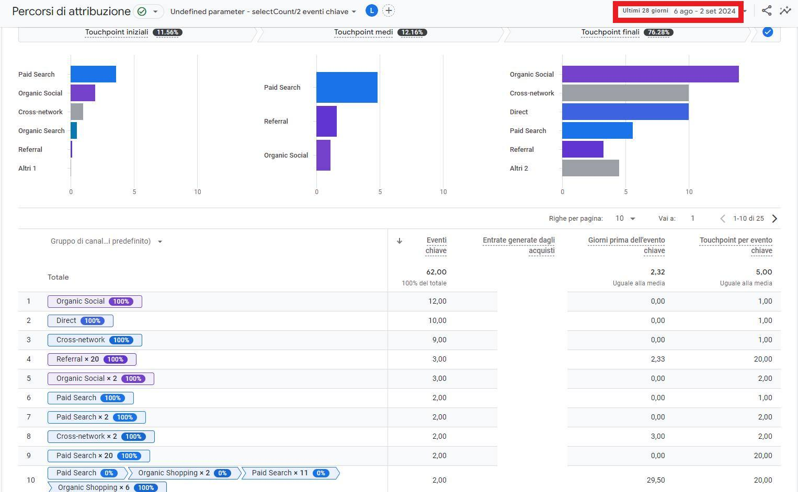
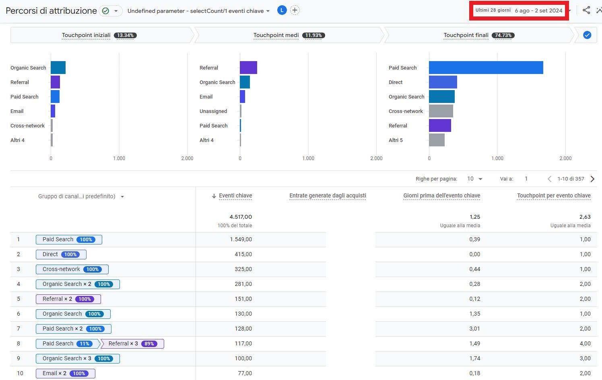

Google Ads e Meta: spreco di soldi o investimento strategico? Analisi reale sui percorsi di attribuzione

Google Ads e Meta: spreco di soldi o investimento strategico? Analisi reale sui percorsi di attribuzione
C’è un mito che gira spesso nei gruppi di marketing e imprenditoria online: “Google Ads e Meta mangiano soldi, le campagne non servono a nulla”.
Ma è davvero così? Oppure il problema non è lo strumento, ma il modo in cui viene utilizzato?
In questo articolo voglio mostrarti, con esempi concreti e basati sui dati, come funzionano i percorsi di attribuzione e i touchpoint all’interno del customer journey. Ti assicuro che i numeri parlano chiaro: senza pubblicità online, il percorso verso la conversione diventa lungo, incerto e spesso inefficace.
Cosa sono i percorsi di attribuzione e perché sono fondamentali
Quando un utente acquista un prodotto o compila un form di contatto, non lo fa quasi mai al primo click.
Il suo percorso è fatto di touchpoint (punti di contatto digitali), che possono essere:
-
Touchpoint iniziali → il primo contatto con il brand (es. annuncio su Google Ads o post sponsorizzato su Meta).
-
Touchpoint intermedi → ulteriori interazioni che nutrono l’interesse (newsletter, ricerca organica, referral, social).
-
Touchpoint finali → l’azione conclusiva (acquisto, lead, conversione).
Senza un’analisi di questi passaggi, si rischia di attribuire tutto il merito al “canale finale” (spesso il traffico diretto), ignorando il ruolo vitale delle campagne pubblicitarie nelle fasi precedenti.



I dati reali: 3 casi studio a confronto
Ho analizzato tre scenari diversi, con budget e settori differenti, e i risultati dimostrano un trend inequivocabile.
Caso 1: PPC vincente, ma non da solo
Il Paid Search è protagonista nei touchpoint finali.
I touchpoint intermedi mostrano un ruolo decisivo anche di referral e ricerca organica.
Conversioni: elevate, ma solo grazie a un mix di canali.
👉 Senza le campagne PPC, il flusso iniziale sarebbe crollato.
Caso 2: 20 touchpoint prima della conversione
Alcuni utenti hanno bisogno di oltre 20 interazioni prima di acquistare.
Il ruolo di Meta Ads e Google Ads nei touchpoint iniziali è cruciale per tenere vivo l’interesse.
Conversione finale? Spesso su Organic Social o Direct.
👉 Senza pubblicità, questo percorso si sarebbe interrotto molto prima.
Caso 3: fino a 45 giorni prima della conversione
Alcuni clienti impiegano più di un mese e mezzo prima di concludere.
I touchpoint iniziali partono dal Paid Search, ma il click finale è sul canale diretto.
Risultato: il cliente ha bisogno di tempo, ripetizione e costanza.
👉 Fermare le campagne significherebbe bloccare il flusso e allungare i tempi di ritorno “alla normalità”.
La verità: Google Ads e Meta non sprecano soldi, se usati bene
Dai dati emerge una verità semplice:
Non è la piattaforma a sprecare soldi, ma l’uso scorretto che se ne fa.
Una campagna senza strategia, senza analisi dei touchpoint e senza obiettivi chiari è destinata a bruciare budget.
Una campagna ben pianificata diventa invece il motore che accende e accompagna il cliente lungo tutto il percorso di conversione.
Perché fermare le campagne è un errore fatale
Molti imprenditori pensano: “Proviamo a spegnere le campagne per un mese e vediamo se cambia qualcosa”.
Il problema? Succede questo:
I touchpoint iniziali e medi crollano.
Il fatturato cala rapidamente.
Riattivando le campagne, i tempi per tornare alla normalità diventano lunghissimi (anche settimane o mesi).
In un mercato competitivo e in fase di recessione, fermare gli investimenti pubblicitari significa regalare spazio alla concorrenza.
Il ruolo del marketer: analisi, strategia e visione
Un vero marketer non è colui che “accende campagne e spera”, ma chi:
✅ Analizza i dati con lucidità.
✅ Condivide report chiari, anche crudi.
✅ Propone ipotesi di miglioramento, senza spacciare le proprie strategie per verità assolute.
✅ Lavora per aumentare il fatturato, non solo i click.
Conclusione: investire sì, ma con intelligenza
Siamo in un periodo storico complicato: inflazione, crisi geopolitiche, concorrenza globale.
L’unica via è investire in modo oculato, continuare a comunicare i punti di forza e ottimizzare costantemente l’esperienza utente.
🔑 Ricorda:
Un sito vecchio, non aggiornato, senza SEO tecnica e con campagne impostate male non porta risultati.
Un sito ottimizzato, con campagne mirate e un’analisi continua dei touchpoint diventa un generatore di valore.
👉 Non smettere di investire. Inizia a farlo meglio.
📌 Se vuoi approfondire come strutturare campagne Google Ads e Meta davvero efficaci, contattami: analizziamo i tuoi dati e costruiamo una strategia basata su numeri, non opinioni.